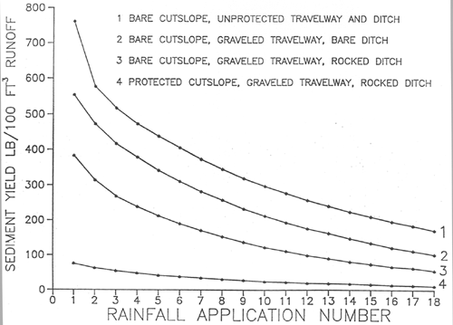

Rocky Mountain Research Station
Moscow Forestry Sciences Laboratory
1221 South Main Street, Moscow, ID 83843
https://forest.moscowfsl.wsu.edu/
| USDA Forest Service | Rocky Mountain Research Station | Moscow FSL | Soil and Water Engineering |
|---|
ABSTRACT
A continuing Forest Service research effort to study onsite sediment yield from forest lands provides information on the relative erodibility of certain geologic parent materials and methods to reduce surface erosion. Simulated rainfall on bounded plots is the principal research tool to generate runoff and sediment from selected sites. This technique is also used to measure the reduction in sediment yield as a percentage of that from an unprotected site. Two types of disturbed forest sites are being studied: forest roads and timber harvest areas.Graphs are provided to estimate the amount of erosion reduction by selected treatments on road cutslopes and fillslopes. Percentage ground cover is the principal variable to reduce surface erosion. Where data are available, graphs show estimations of the application rate necessary to provide the required amount of ground cover for a selected percentage erosion reduction. For some treatments, erosion reduction is also a function of slope gradient and silt content in the surface soil. In these cases, an erosion reduction treatment is less effective for steeper slopes and siltier soils.
The net result of controlling erosion on the various components of the forest road is not the sum, or product, of the percentage erosion reduction for each component. Research results are used to partition sediment yield from a 100-foot road section consisting of a running surface, ditch, and cutslope. This partitioning shows the expected decrease in sediment yield as each component of the road is protected, taking into account the contribution from the other components. A procedure is presented to design a rock blanket for the road ditch as a function of the expected discharge, slope, and ditch shape.
INTRODUCTION
In the mountains of the Western United States, forest roads contribute an estimated 85 to 90% of the sediment reaching streams in disturbed forest land. There is great public interest in keeping sediment production from forest roads to a minimum because of the high value attached to good water quality and fish habitat. The Intermountain Research Station's Engineering Technology unit is engaged in a series of studies with three principal objectives: (1) to predict sediment delivered to culverts and cross drains from unprotected forest road segments, (2) to develop effective methods to reduce erosion and sediment production from forest roads, and (3) to predict onsite sediment production resulting from slash disposal and site preparation treatments on timber harvest areas. This paper presents results of work on objective 2. Data from the literature and from in-house research reports were used to provide better insight into effective erosion reduction treatments on four components of the typical forest road: The traveledway, fillslope, cutslope, and road ditch (Figure 1). Our studies have shown that an erosion control treatment applied to one forest road component can influence sediment production from an adjacent component. This means that while the amount of erosion reduction achieved by protecting any given road component may be estimated accurately, the combined effect of erosion reduction treatments on two or more adjacent components may not always be computed directly. This paper will present the measured effectiveness of individual erosion control treatments, then discuss the integrated effects of treating several road components simultaneously.
TRAVELEDWAYS
Graveling the forest road traveledway is a common treatment to improve trafficability in wet weather and to reduce sediment production. The cost of road gravel can be half or more of the total road cost, particularly where acceptable gravel is scarce. Therefore, it is important to know how much sediment reduction is achieved per dollar spent on road gravel.
A study of traveledways subject to natural climatic events in North Carolina showed that wheel ruts in all ungraveled road segments, because of the concentrated runoff, will increase sediment production by a factor of 1.9 compared to a smooth unrutted road segment.1 Our measurements with simulated rainfall on a 100-foot-long ungraveled road segment in Idaho showed that wheel ruts increase sediment production 2.1 times that of an unrutted traveledway. Timely road blading and, more importantly, road closure during wet weather will prevent formation of wheel ruts and will reduce sediment production from the traveledway.
The North Carolina study further showed that a 6-inch layer of 1.5-inch minus crushed rock reduced sediment production by 70% from the unsurfaced condition over a 5-month period. Simulated rainfall was applied to two 100-foot-long bordered road segments in Idaho, with one segment unsurfaced and the other graveled with a 4-inch layer of 1.5-inch minus rock. This test showed that the graveled segment reduced sediment production by 79% compared to the unsurfaced segment.
Two conditions must be observed for effective erosion reduction by graveling the road traveledway: (1) the gravel itself must be resistant to abrasion by heavy traffic and (2) the gravel layer must be thick enough to support the expected vehicle weight. Relatively soft, easily abraded rock may have to be used to surface the traveledway where hard rock is not available, but the amount of erosion reduction may be significantly reduced. The North Carolina study showed that a 2-inch layer of 1.5-inch minus gravel was insufficient to provide any erosion reduction. A 4-inch gravel layer is the minimum thickness normally used in Idaho to reduce erosion from logging traffic. Figure 2 is a graph of the estimated reduction in sediment yield from 1.5-inch minus gravel as a function of layer thickness. Data came from road segments exposed to natural climatic events in North Carolina and simulated rainfall on a 100-foot-long road segment in Idaho. The predicted sediment reduction increased sharply with gravel layer thickness greater than the 2-inch minimum.
Two other erosion control treatments, dust oil and bituminous surfacing, were tested with simulated rainfall on bounded road segments in granitic parent material in central Idaho. Dust oil and the bituminous surface treatment reduced sediment production by 85.3 and 96.6%, respectively, compared to sediment production from unsurfaced roads. The dust oil surface breaks up quickly under logging traffic and also releases volatile chemicals into surface runoff. The bituminous treatment is expensive but long lasting and may be worth the cost to protect stream crossings where water quality and fish habitat values are particularly high.
FILLSLOPES
Road fillslopes are generally constructed by sidecasting excavated material onto the cleared right-of-way below the road. The average gradient of these constructed slopes is the angle of repose for sidecast material: about 67% or 1.5:1 (run:rise). The "filter windrow" is one of the most cost-effective methods to reduce sediment leaving the base of the fillslope. Hydraulic excavators (backhoes) can quickly construct a windrow of logging slash (resulting from clearing right-of-way timber) concurrent with subgrade excavation. Cook and King (1983) found that these dense barriers of logging slash reduced sediment that leaves the fillslope by 75 to 85% over a 3-year period following road construction.2 A test with simulated rainfall of a hand-constructed filter windrow showed an 88% reduction in sediment yield compared to an untreated fillslope.
The sediment reduction characteristics of six erosion control treatments commonly used on forest roads were compared: straw mulch with asphalt tackifier; straw with jute, kraft paper, or wire net; straw alone; erosion mats; hydromulch; and wood chips or rock. The percentage ground cover provided by each treatment was the principal variable in estimating the effectiveness of each treatment. Data for these comparisons came from published results of tests with slopes exposed to simulated rainfall and natural climatic events. Figures 3 through 8 illustrate the amount of sediment reduction to be expected for each treatment as a function of percentage ground cover and, where sufficient data are available, as functions of slope gradient and silt content. Note that the percentage sediment reduction decreases as slope gradient and silt content increase. Also given is the expected ground cover percentage provided by application rate for selected treatments.
Figure 1. Definition of terms used in this paper.
Figure 2. Effect of gravel thickness on sediment reduction.
Figure 3. Effect of straw mulch with an asphalt tack.
Figure 4. Effect of straw mulch with netting.
Figure 5A. Effect of straw mulch alone.
Figure 5B. Ground cover as a function of straw application rate.
Figure 6. Effect of erosion mats.
Figure 7. Effect of hydromulch.
For road segments where the maximum sediment reduction is required, several treatments may be combined. Figure 9 shows sediment production resulting from simulated rainfall on a bare fillslope and slopes treated with a filter windrow, curlex mulch (wood fiber with nylon netting), and the expected sediment yield with curlex mulch on the slope above a filter windrow. This figure shows several things. First, note the large amount of sediment produced by rainfall on the unprotected fillslope and, second, the rapid decline in sediment with successive rainfall applications as fine material is eroded and the surface armors. The combined curlex/windrow treatment provides an estimated 99% reduction in sediment and would be cost-effective for short segments of fillslope adjacent to a culvert.
Figure 8. Effect of wood chip and rock mulch.
Figure 9. Effect of several fillslope treatments.
Fillslope sediment production was measured on
unbordered plots below crowned traveledways in a northern Idaho research area.3
Almost all of the larger gullies in the fillslopes were generated by traveledway
drainage. On fillslopes with a vertical height less than 20 feet, sediment reductions
by seed, hydromulch, and straw mulch with an asphalt tackifier were statistically
similar and ranged from 46 to 58% over a 3-year period. The results of these
three treatments were also statistically similar on fillslopes with vertical
heights of 20 to 40 feet, but sediment reduction ranged from 24 to 30% over
a 3-year period.
Figure 10. Sediment transport below fills with no culverts.
Figure 11. Sediment transport below relief culverts
The effectiveness of any mulch treatment will
be reduced if traveledway drainage is allowed to flow onto the fillslope. Uniform
drainage from a crowned or outsloped road over the length of the road segment
causes less reduction in fillslope protection than a wheel rut on the shoulder
that collects water and spills it onto the fillslope at one location. Gullies
and rills that result from concentrated traveledway drainage can carry sediment
for long distances below the fillslope. A survey of sediment travel distances
below fillslopes showed an average sediment travel distance of less than 4 feet
below filter windrows.3 The mean sediment travel
distance below nonwindrowed fill-slopes without traveledway drainage was 26
feet. For nonwindrowed slopes with traveledway drainage, but not culvert flow,
the mean sediment travel distance more than doubled to 59 feet. These measurements
illustrate the effectiveness of filter windrows in holding sediment at the base
of the fillslope.
To better understand the influence of traveledway drainage and culvert flow on sediment travel distance below fillslopes, consider the cumulative frequency of fillslopes with sediment transport distances less than or equal to selected distances. Figure 10 was developed with measurements of sediment transport distances below nonwindrowed, nonslumped fillslopes with and without traveledway drainage, but with no relief culvert flow in any case. For fillslopes with no traveledway drainage, about 94% of these slopes had sediment travel distances of 70 feet or less. By comparison, for fillslopes with traveledway drainage, only 48% had travel distances of 70 feet or less.
Relief culverts are placed at intervals in an long road segment to discharge accumulated ditch flow onto the natural slope below the road to prevent a large flow volume from entering the stream at the road crossing (see Figure 1). Measurements of sediment travel distances below 70 relief culverts in northern Idaho provided data to estimate the average slope distance required to keep sediment from relief culverts from reaching a stream below the forest road.
Over half of these relief culverts had sediment travel distances greater than 75 feet (Figure 11). About 85 and 95% of these culverts had sediment travel distances of at least 200 feet and 300 feet, respectively. These data came from sites with 30 to 40% side-slope gradients in gneiss and schist parent material. These measurements for sediment travel distance may not be valid for other sites with different conditions but may provide a rough guide for the design of the minimum width of undisturbed timber between the road and a stream.
Straw bales, logging slash, and cull logs can be placed on the slope below the culvert outfall to serve as sediment traps to supplement the sediment-trapping capacity of the undisturbed forest floor. These additional sediment traps may significantly shorten the expected travel distance where the road is close to the stream. Additional information on the effect of obstructions on sediment travel distance below roads may be found in a design guide developed for the northern Rocky Mountains by Packer and Christensen.4
CUTSLOPES
Many of the same variables that affect surface erosion control on fillslopes apply to control of sediment production on cutslopes. The literature and other research results provide little information on erosion control treatments designed specifically for cutslopes. The same erosion control treatments may be used on both fillslopes and cutslopes, with the exception of wood chip and rock mulches, and hydromulch, which may not be suitable for steep cutslopes. Assume that the estimates of sediment reduction given in Figures 3 through 8 will apply to both fillslopes and cutslopes because the data sets include sites with slope gradients as steep as 80 to 100%. Exceptions to this general rule will be discussed where local data, experience, and observations indicate some treatments are less effective under certain conditions.
Straw mulch applied with a tackifier is substantially more effective in reducing sediment production than straw mulch by itself. In a northern Idaho research watershed, a straw mulch with asphalt tackifier, seed and fertilizer application on 0.75:1 new cutslopes in gneiss and schist material reduced sediment by 32 to 47% over a 3-year period. Vertical cutslope heights ranged from 3 feet to over 40 feet. On 1.25:1 slopes, there was little rilling or deposition in the ditch, and the resulting grass stand was nearly uniform. Sediment reduction on these gentler slopes probably exceeded 90%.
For straw mulch without an asphalt tackifier, sediment production was reduced by 35% for 0.75:1 slope gradients, and 40% for slopes at or less than a 1:1 gradient. For straw mulch with an asphalt tackifier, sediment reduction is about 40% for 0.75:1 slopes and 75% for 1:1 or less steep slopes. Frost heaving or ground ice will displace patches of mulch and reduce its overall effectiveness.
Two types of erosion control mats, a plastic net-type and a nylon-reinforced paper mulch, were evaluated with simulated rainfall in gneiss and schist material on 1:1 cutslopes with vertical heights of 8 to 12 feet. Observations of sediment leaving the mulched sites compared to sediment concentration data collected from comparable bare slopes suggest sediment reductions of 98%. Swift (personal communication, 1987) in North Carolina observed negligible sediment from an excelsior mat reinforced with nylon netting placed over a newly seeded cutslope. Our observations of these mats after two winters showed no displacement on the cutslope by the weight of the winter snowpack. Based on these observations, the recommended sediment reduction for these mats on 1:1 slopes is 95%. Assume that mass wasting processes cannot be controlled by these cutslope treatments.
Observations of dry seeded sites on the Nez Perce National Forest in northern Idaho suggest that this treatment is not successful on 0.75:1 cutslopes unless the vertical height is less than 6 to 8 feet. Other observers note that dry seeding will produce good stands of grass on slopes with a 1:1 or more gentle gradient. A 10% first-year sediment reduction is estimated for dry seeded 0.75:1 slopes with vertical heights over 8 feet, and a 36% reduction for slope gradients of 1:1 or less.
Terracing is an effective treatment to reduce sediment from cutslopes. While erosion may be quite high on the steep terrace face, the eroded soil is deposited on the level terrace floor and not transported off the slope. Megahan (1985) measured an 86% reduction in sediment production from terraced and hydroseeded cutslopes in Idaho Batholith granitics; these cutslope gradients ranged from 0.95:1 to 1.38:1.5 A California study showed a 94% sediment reduction on a terraced 2:1 cutslope in decomposed granitic material. An average sediment reduction of 86% is appropriate for terraced cutslopes.
ROADSIDE DITCH
Mitigation treatments that reduce sediment production from road traveledways and cutslopes allow water with lowered sediment concentration to enter the ditch. This relatively clean ditch water has increased capacity to detach soil from the ditch bottom and transport it to the stream crossing.
Rock blankets, or riprap, is the most common and most economical erosion control treatment for roadside ditches. The D50, Dmax. and riprap thickness may be designed as a function of flow rate, channel slope, and channel shape. This design procedure was based on Highway Research Board Report 108 (1970) with graphical solutions.6 The basic design equations from this report were used to develop a program to calculate the D50 required to maintain channel stability for forest road ditches. Initial flow depth (d) for trapezoidal channels is estimated by a regression equation using flow rate, channel slope, channel side slopes, and a Manning's n of 0.03. The program calculates D50 for the triangular ditches without iteration. See Burroughs and King (1989) for a detailed discussion of this riprap design procedure, including example solutions and a calculator program listing.
An Environmental Protection Agency report (1976) recommends that the maximum size of stone in the riprap be 1.5 times D50.8 This report also recommends that the thickness of the riprap blanket be 1.5 times the maximum rock size but not less than 6 inches.
Another major consideration in riprap blanket design is whether a filter is required between the riprap and the underlying subgrade material (base). If the D50 of the base material is too fine relative to the riprap, then flowing water may pull material out of the base and allow the riprap to collapse. A criterion for determining whether a filter is required is to compare the D50 for the two layers; a ratio of D50 Riprap : D50 Base < 40 indicates that a filter will not be needed.
INTEGRATED EFFECT OF EROSION CONTROL TREATMENTS ON ADJACENT FOREST ROAD COMPONENTS
Little information is available on the integrated effect of erosion control treatments supplied simultaneously to the road traveledway, ditch, and cut-slope. Simulated rainfall was applied to 100-foot-long bounded sections of forest road built in gneiss and schist material in northern Idaho.7 One section had no protection on traveledway, cutslope, or ditch. The second section had a graveled (1.5-inch minus) traveledway, bare cutslope, and bare ditch. Metal barriers and gutters were used to collect traveledway runoff separately from the combined runoff from ditch and cutslope. Several rainfall applications were made on each section in its initial condition to measure sediment production from bare and graveled traveled-ways, and other rainfall applications were made with the ditch in a protected and a graveled condition.
Figure 12 provides our estimate of the combined effects of a gravel road surface with a protected ditch using the results of these barriered and unbarriered tests on both the gravel-surfaced and unprotected section. The upper curve in Figure 12 represents the sediment production to be expected from a 100-foot road section with no gravel on the traveledway or in the ditch, and an unprotected cutslope in border-zone gneiss and granite. The second curve results from a graveled traveledway and an unprotected ditch and cutslope. The average reduction in sediment yield from a 100-foot road section with this treatment is 33%.
The third curve represents an estimate of reduced sediment production provided by a graveled traveledway and graveled ditch, relative to an unprotected road section. The average reduction is 57%. The application of gravel to the ditch in addition to the traveledway reduces sediment production by an average of 24%. The gravel used to protect the ditch in these tests was the same material used to surface the traveledway, 1.5-inch minus gneissic rock with a D50 of 0.24 inches. The riprap design program estimated a D50 of about 1.1 inches for a stable ditch with the flow rate, slope, and ditch shape present on this site. Degradation of the ditch bottom at the lower end of the plot was measured during these tests, which indicates that coarser gravel should have been used to stabilize the ditch bottom. If so, then the reduction in sediment yield provided by graveling the ditch would have been greater than shown by these tests. This also suggests that the unprotected ditch may be a greater source of sediment than the unprotected traveledway, at least for roads with a low traffic volume.
The bottom curve is an estimate of the additional sediment reduction provided by protecting the cut-slope. For this estimate, we assumed that the cutslope protection was 80% effective and that the graveled ditch did not itself provide any significant sediment. This hypothetical curve was derived by subtracting an additional 80% of the sediment production from the graveled road/graveled ditch curve. The estimated sediment reduction provided by graveling the traveledway and ditch protecting the cutslope averages 91%.
Other items should be noted. The effect of surface armoring is quite pronounced as rainfall and runoff detach and remove fine soil particles and cause a progressively coarser surface texture. Keep in mind that these curves result from simulated rainfall on two 100-foot sections of road. Therefore, these results are accurate only for the relative differences in sediment production provided by various mitigation treatments. The values of sediment production in pounds per 100 feet3 of runoff should not be used to represent results of natural rainfall or snowmelt.

Figure 12. Estimated effect of treating adjacent road
components.
TIMELINESS OF EROSION CONTROL TREATMENTS ON FOREST ROADS
Sediment production from unprotected forest road surfaces is high for the first few rainfall events but decreases rapidly as these surfaces armor, as shown in Figures 3 and 12. Therefore, if a road surface is to be protected at all, it should be protected as soon as possible after construction. Fillslope sediment production measured over a 2-year period in northern Idaho showed that about half of this material moved in the first summer and fall. Erosion control measures than can be put in place immediately after construction have a much larger potential to appreciably reduce sediment production compared to measures that are implemented later.
If treatment is delayed following road completion, we suggest that the percentage of erosion reduction be decreased. The time delay in treatment, expected precipitation, and armoring effects should all be considered in estimating a weighted sediment reduction percentage.
CONCLUSIONS
This paper provides land managers with a brief summary of the effectiveness of various treatments and practices to reduce erosion and sediment transport from forest roads. The reader is referred to a more detailed description of the effects of these treatments by Burroughs and King.7 Experience and professional judgment are required to relate many of these results to local situations.
REFERENCES
1. L.W. Swift, Soil losses from roadbeds and cut and fill slopes in the southern Appalachian Mountains, Southern Journal of Applied Forestry, 8(4):209-213, 1984.
2. M.J. Cook and J.G. King, Construction cost and erosion control effectiveness of filter windrows on fillslopes, Research Note INT-335, Ogden, UT: U.S. Department of Agriculture, Forest Service, Intermountain Forest Range Experiment Station, 5 pp., 1983.
3. J.G. King, Fillslope erosion from forest roads, Proceedings, 34th meeting, 1979 October 3-5; Boise, ID, Paper 79-404, St. Joseph, Ml: American Society of Agricultural Engineers, 11 pp., 1979.
4. P.E. Packer and G.F. Christensen, Guides for controlling sediment from secondary logging roads, Ogden, UT: U.S. Department of Agriculture, Forest Service, Intermountain Research Station, 42 pp., date unknown.
5. W.F. Megahan, Road effects and impacts--Watershed, Proceedings, Forest Transportation Symposium; 1984 December 11-131 Casper, WY, Lakewood, CO: U.S. Department of Agriculture, Forest Service, Rocky Mountain Region, Engineering Staff Unit, pp. 57-97, 1985.
6. A.G. Anderson, A.S. Paintal, and J.T. Davenport, Tentative design procedure for riprap-lined channels, National Highway Research Program Report 108, Washington, D.C.: National Academy of Sciences, Highway Research Board, 75., 1970.
7. E.R. Burroughs, Jr., and J.G. King, Reduction of soil erosion on forest roads, General Technical Report INT-264, Ogden, UT: U.S. Department of Agriculture, Forest Service, Intermountain Research Station, 21 pp., 1989.
8. Environmental Protection Agency, Erosion
and sediment control, surface mining in the Eastern United States, Vol. 2, Design,
Cincinnati, OH: Office of Technology Transfer, 243 pp., 1976.
Burroughs, E.R., Jr. 1990.
Predicting onsite sediment yield from forest roads.
Proceedings of Conference XXI, International Erosion Control Association, Erosion Control: Technology in Transition.
Washington, DC, February 14-17, 1990. 223-232.
Originally published as:
|
|
USDA Forest Service Rocky Mountain Research Station Moscow Forestry Sciences Laboratory 1221 South Main Street, Moscow, ID 83843 https://forest.moscowfsl.wsu.edu/ |
|